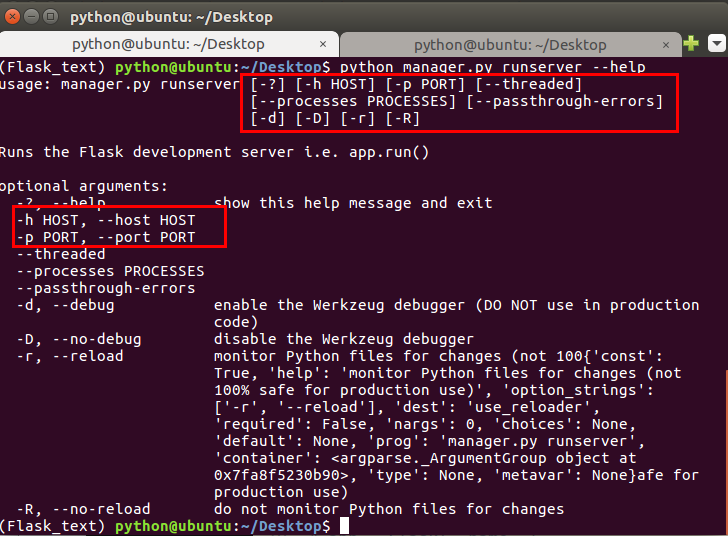

1. Flask-Script 扩展
通过使用Flask- Script扩展，我们可以在Flask服务器启动的时候，通过命令行的方式传入参数。而不仅仅通过app.run()方法中传参，比如我们可以通过：
python hello.py runserver -host ip地址
以上代码告诉服务器在哪个网络接口监听来自客户端的连接。默认情况下，服务器只监听来自服务器所在的计算机发起的连接，即localhost连接。
我们可以通过python hello.py runserver --help来查看参数。

1.1. 代码实现
- 安装 Flask-Script 扩展
pip install flask-script
- 集成 Flask-Script
from flask import Flask
from flask_script import Manager
app = Flask(__name__)
# 把 Manager 类和应用程序实例进行关联
manager = Manager(app)
@app.route('/')
def index():
return '床前明月光'
if __name__ == "__main__":
manager.run()
Flask-Script 还可以为当前应用程序添加脚本命令，后续项目中会使用到